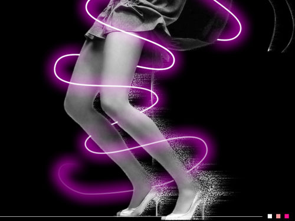

dialog 元素构建对话框、模态框
用原生 <dialog> 的 showModal() 拿顶层遮罩、焦点管理和 Esc 关闭，
再用 is="ui-dialog" 把内置元素升级成组件，剩下的只是 UI 和参数。
一、popover 弹框
给 dialog 加 popover 属性，打开和关闭全交给 popover API，一行 JS 都不用写。
二、点击图片查看大图
缩略图只挂一个自定义属性，点开后在满屏 dialog 里看大图，支持左右切换与键盘方向键。

点击缩略图打开；点遮罩、按 Esc 或右上角关闭；← → 切换。
三、改造成组件：is="ui-dialog"
给 dialog 写上 is="ui-dialog"，再用 data-params 传参，
只认 title、closable、buttons 三个字段。
按钮支持 primary / danger / normal 三种类型、自定义文案和点击回调。
组件本体在 assets/ui-dialog.js（ESM），样式在 assets/ui-dialog.css，页面只负责摆按钮。
Safari 至今不支持 customElements.define(…, { extends: 'dialog' })，
组件内部探测到不支持时才会去动态加载 assets/safari-polyfill.min.js。